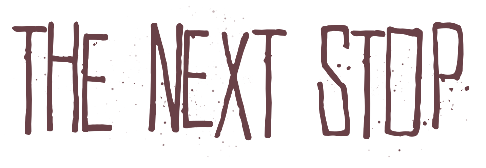
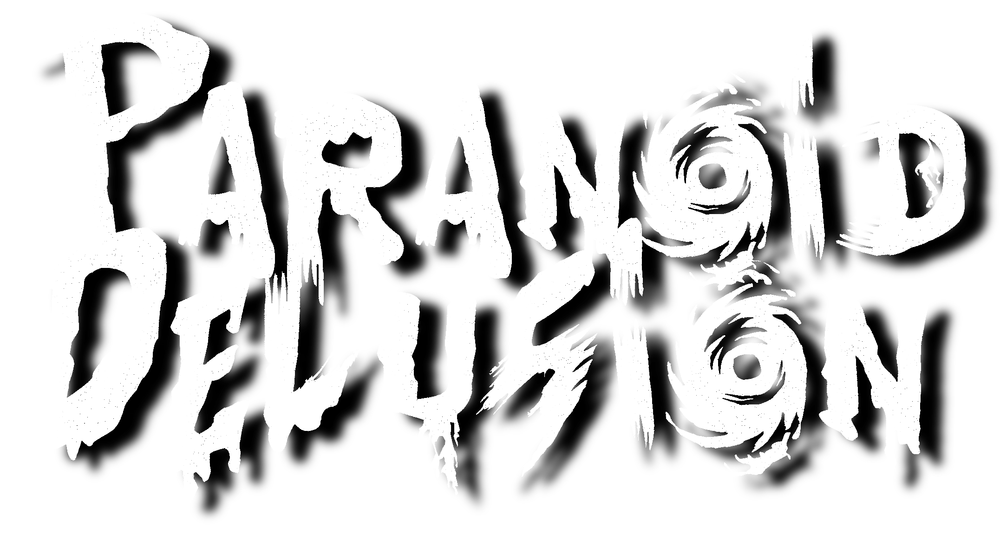
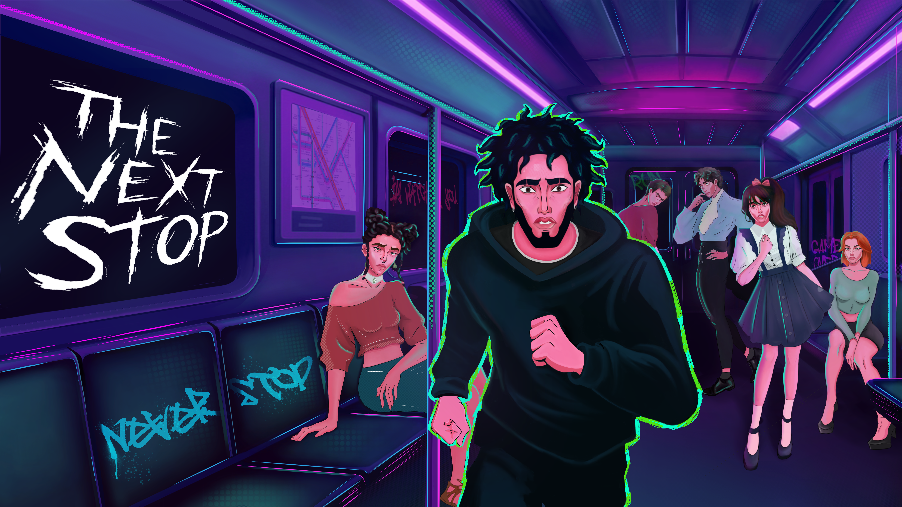
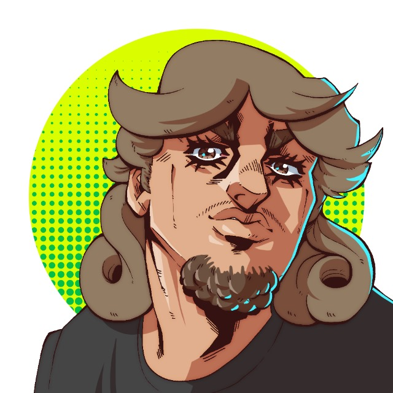

01YA PASÓ
GAMESCOM 2026
Nos vemos en la feria.
En 2026 llevamos The Next Stop a Gamescom y compartimos el proyecto con nuevos jugadores.

UN JUEGO DE
AVENTURA NARRATIVA INDEPENDIENTE
A Psychological Mystery Game · Point & Click
Una aventura point and click de misterio psicológico. Explora, observa cada detalle y deja que la historia te lleve a la próxima parada.

02 / PROYECCIÓN A BORDO
El tráiler de The Next Stop.
GAMESCOM 2026
En 2026 llevamos The Next Stop a Gamescom y compartimos el proyecto con nuevos jugadores.
GAME.EUS
Participamos en la incubadora vasca Game.eus, en Gasteiz, durante seis semanas de trabajo y aprendizaje.
SAGA 2026
Estaremos los días 9, 10 y 11 de octubre en SAGA. Nos vemos allí.
04 / PARTE DE LA LÍNEA
Las novedades de The Next Stop
se publicarán aquí.
DESARROLLO
Seguimos trabajando en The Next Stop para construir un misterio que quieras explorar hasta la última parada.
THE NEXT STOP
Descubre el juego y sigue el proyecto en nuestras páginas de Steam e itch.io.
PARANOID-DELUSION
Personajes, making of y nuevas señales aparecerán en esta línea de noticias.
05 / QUIÉN ESTÁ DETRÁS
Quiénes somos — texto provisional. Aquí hablaremos de nuestra forma de crear, de las historias que nos inspiran y de cómo trabajamos juntos.
Diseñador · Guionista
Texto provisional sobre su mirada creativa y su trabajo en el estudio.
Artista
Texto provisional sobre su universo visual y su forma de dar vida al juego.

Programador
Texto provisional sobre la tecnología y los sistemas que construye.
MÁS SOBRE EL ESTUDIO, PRÓXIMAMENTE ↗